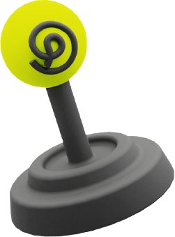

About
What is PINs?
PINs is a content social network that uses
multi-role-playing to create plot-driven metaverses.
multi-role-playing to create plot-driven metaverses.
Advantage
PINs
Unique Aspects & Advantages
Unique Aspects
1
It creates a social model that fits the decentralized, crypto-based world. Unlike platforms like Damus that simply mirror traditional social models, PINs redefines what a decentralized social network can be.
2
It combines gaming, content creation, and story-driven social interaction for a diversified social experience.

3
It operates as a multi-chain aggregate social platform, incorporating NFTs and tokens from multiple public chains.
Advantages
1
PINs Network provides a balance between privacy and effective social interaction.
2
It promotes a creator economy akin to GitHub and uses NFTs as unique digital identities.
3
Each NFT is given a personality, background, and history, redefining social identities.
Ecosystem
Offering
Total Supply
10,000,000,000 PINs
Will be distributes over a period of 20 years
Power of Social
7,000,000,000
Early supporters and Community
Launchpad
200,000,000
Investor
500,000,000
Team and Foundation
300,000,000
For social developer ecosystem and community contribution incentives
Eco Rewards
2,000,000,000
PINs
Token（ERC20）
The PINS Token (ERC20) is the universal currency of the PINS world. It can be used to pay for NFT props and currency assets in different Verses, and invest in different Community DAOs to obtain returns, among other functions.
PINs
Ecosystem
PINS Ecosystem Each Verse can design its own Game-Fi game rules and economic mechanisms, issue its own currency and other NFT assets, and use them within the economic ecosystem.